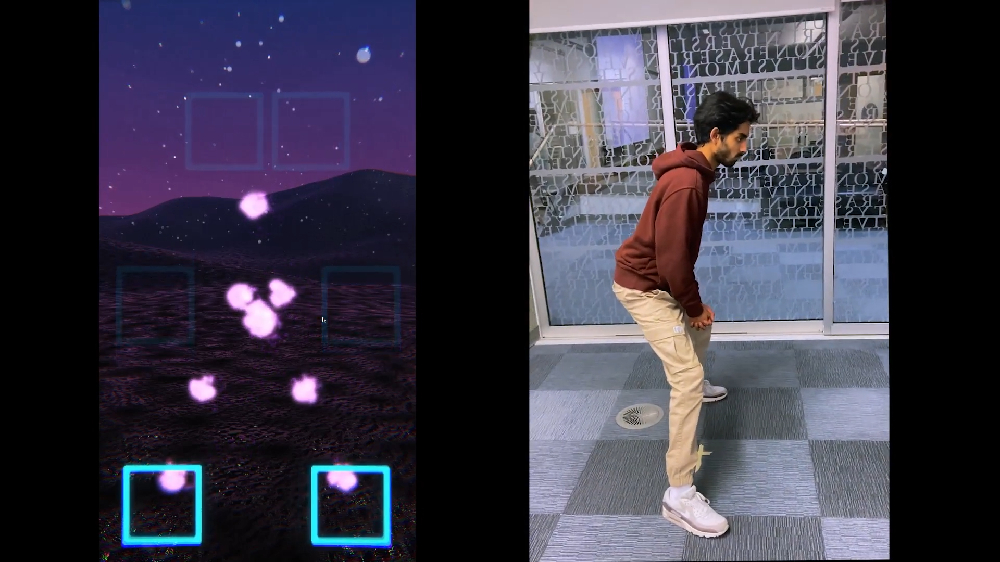

Kinesthesia

Kinesthesia
An embodied musical experience where you can control the instruments with your body parts and influence the sound with smaller movements. Run with a webcam!
Overview
Kinesthesia is a musical experience made with Unity and computer vision that allows you to control and influence sound by places your body parts in floating squares. The body is reflected as a digital mirror on screen and the sound can be controlled by moving further into the squares.
Contributions
I composed and produced the different layers of music for this project. I also worked on implementing the system into Unity and making sure the aesthetics betweeen the music and the environment matched.
Demonstration
Watch me perform in front of my class at our project showcase!
Prototype elements
A progress report of our team halfway through development where we show the indvidual components.